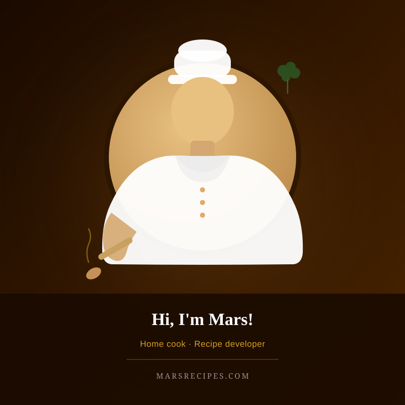

Hi, I'm Mars
And I believe the best dinners don't take all night — they just need great flavors and honest ingredients.

Our Story
Mars Recipes started from a simple frustration: too many recipe sites are either complicated enough to require culinary school training, or so stripped down that the food has no real flavor. I wanted something in between — recipes that respect your time but never compromise on taste.
I grew up eating bold, aromatic food full of spices and slow-cooked richness. When I moved to the US, I fell in love with American comfort food — creamy sauces, smoky BBQ, hearty one-pan dinners. Mars Recipes is the bridge between those two worlds: globally-inspired flavors made with ingredients you can find at your local Trader Joe's, Whole Foods, or Kroger, presented in a way any home cook can follow on a weeknight.
Every recipe on this site has been made in my own kitchen — tested multiple times, tweaked until it's right, and written the way I'd explain it to a friend standing next to me at the stove. When something doesn't work, I tell you why. When a shortcut is just as good, I use it. When you absolutely need to do something a certain way to get the result, I make sure you know.
The goal is simple: you come here, you find a recipe, you make it tonight, and it turns out great. That's it.
Browse All Recipes →What You'll Find Here
Weeknight-Ready
Most recipes on this site are ready in 30–45 minutes. Life is busy. Great food shouldn't require half a Sunday afternoon.
Real Grocery Store Ingredients
Every ingredient can be found at Whole Foods, Trader Joe's, Kroger, or Walmart. No specialty stores, no hard-to-find imports.
Family-Friendly Flavors
Bold enough to be interesting for adults, approachable enough that the whole table finishes their plate. Leftovers optional but encouraged.
Tested Until It Works
Every recipe is made in a real home kitchen — not a professional test kitchen with perfect equipment and a team of assistants. If it works here, it'll work in yours.
Our Promise to You
Recipes that are honest about the time they take, clear about the ingredients you need, and genuinely delicious when you follow them.
I don't post a recipe until I'm confident it's worth your time. If something has a tricky step, I'll warn you. If there's a great shortcut, I'll share it. If a budget substitution works just as well as the original, you'll know.
When you cook from Mars Recipes, you're cooking from a recipe that someone actually made, ate, and was proud of. That's the standard — nothing less.